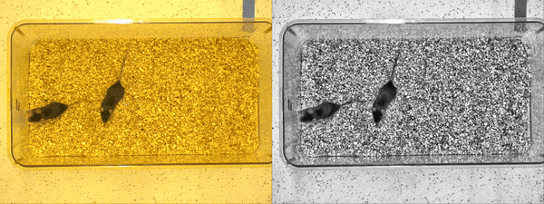
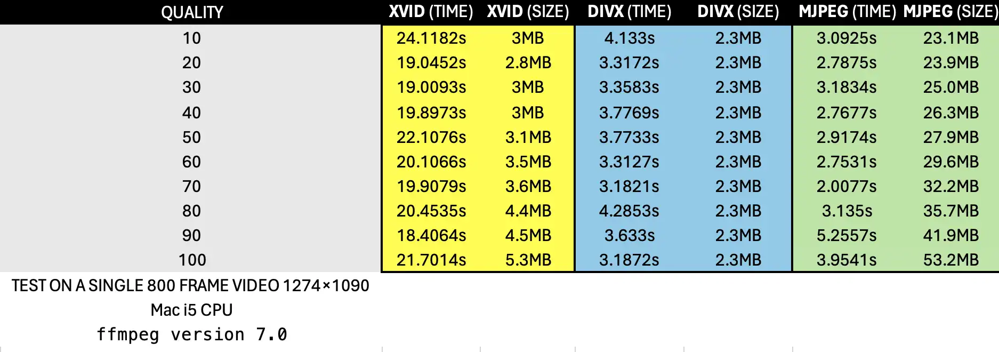
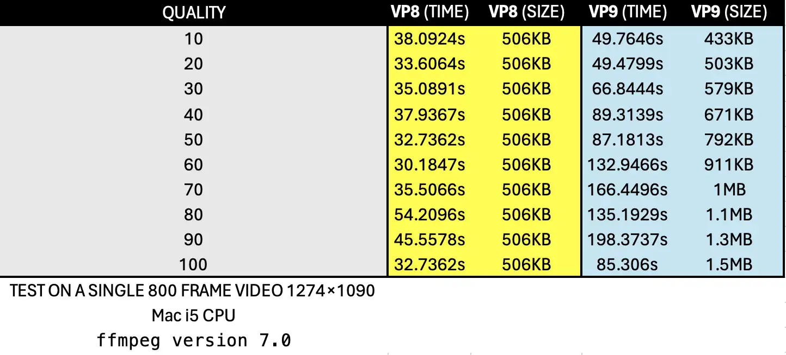
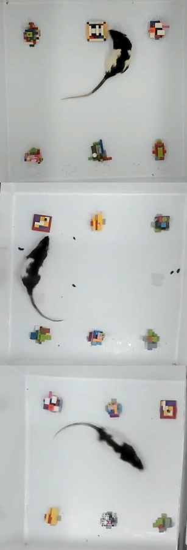
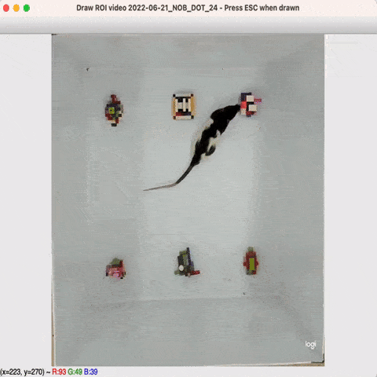
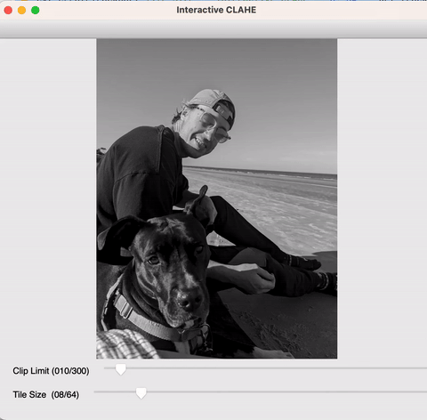

Video processors
Batch process
- class simba.video_processors.batch_process_create_ffmpeg_commands.FFMPEGCommandCreator(json_path: str)[source]
Bases:
objectExecute FFmpeg commands from instructions stored in json format.
- Parameters:
json_path (str) – path to json file storing FFmpeg instructions as created by
simba.batch_process_vides.BatchProcessFrame.
Notes
Batch pre-process tutorials. Example expected JSON file.
Examples
>>> ffmpeg_executor = FFMPEGCommandCreator(json_path='MyJsonFilePath') >>> ffmpeg_executor.crop_videos() >>> ffmpeg_executor.clip_videos() >>> ffmpeg_executor.downsample_videos() >>> ffmpeg_executor.apply_fps() >>> ffmpeg_executor.apply_grayscale() >>> ffmpeg_executor.apply_frame_count() >>> ffmpeg_executor.apply_clahe() >>> ffmpeg_executor.move_all_processed_files_to_output_folder()
Get pixels per millimeter
Extract frames
Extract .SEQ frames
Created on Fri Oct 4 14:39:50 2019
@authors: Xiaoyu Tong, Jia Jie Choong, Simon Nilsson
Multi-cropper
- class simba.video_processors.multi_cropper.MultiCropper(file_type: typing_extensions.Literal['avi', 'mp4', 'mov', 'flv', 'm4v'], input_folder: Union[str, PathLike], output_folder: Union[str, PathLike], crop_cnt: int, gpu: Optional[bool] = False)[source]
Bases:
objectCrop each video of a specific file format (e.g., mp4) in a directory into N smaller cropped videos.

- Parameters:
input_folder (Union[str, os.PathLike]) – Folder path holding videos to be cropped.
file_type (Literal['avi', 'mp4', 'mov', 'flv', 'm4v']) – File type of input video files inside the
input_folderdirectory.output_folder (Union[str, os.PathLike]) – Directory where to store the cropped videos.
crop_cnt (int) – The number of cropped videos to create from each input video. Minimum: 2.
gpu (bool) – If True, use GPU codecs, else CPU. Default CPU.
Get pixels per millimeter - old
Video processing tools
- class simba.video_processors.video_processing.VideoRotator(input_path: Union[str, PathLike], output_dir: Union[str, PathLike], gpu: Optional[bool] = False, ffmpeg: Optional[bool] = False)[source]
Bases:
ConfigReaderGUI Tool for rotating video. Rotated video is saved with the
_rotated_DATETIME.mp4suffix.
- Parameters:
- Example:
>>> VideoRotator(input_path='project_folder/videos/Video_1.mp4', output_dir='project_folder/videos')
- simba.video_processors.video_processing.append_audio(video_path: Union[str, PathLike], audio_path: Union[str, PathLike], audio_src_type: typing_extensions.Literal['video', 'audio'] = 'video') None[source]
Append audio track from one video to another video without an audio track.
- Parameters:
video_one_path (Union[str, os.PathLike]) – Path to video file without audio track.
audio_path (Union[str, os.PathLike]) – Path to file (e.g., video) with audio track.
audio_src_type (Literal['video', 'audio']) – Type of audio source of “video_two_path” (e.g., video or audio file).
- Example:
>>> append_audio(video_path='/Users/simon/Desktop/envs/troubleshooting/two_black_animals_14bp/project_folder/videos/merged_video_20230425201637.mp4', >>> audio_path="/Users/simon/Documents/Zoom/ddd/video1180732233.mp4")
- simba.video_processors.video_processing.batch_convert_video_format(directory: Union[str, PathLike], input_format: str, output_format: str, gpu: Optional[bool] = False) None[source]
Batch convert all videos in a folder of specific format into a different video format. The results are stored in the same directory as the input files.
- Parameters:
directory (Union[str, os.PathLike]) – Path to video file directory.
input_format (str) – Format of the input files (e.g., avi).
output_format (str) – Format of the output files (e.g., mp4).
gpu (Optional[bool]) – If True, use NVIDEA GPU codecs. Default False.
- Example:
>>> _ = batch_convert_video_format(directory='project_folder/videos', input_format='avi', output_format='mp4')
- simba.video_processors.video_processing.batch_create_frames(directory: Union[str, PathLike]) None[source]
Extract all frames for all videos in a directory. Results are stored within sub-directories in the input directory named according to the video files.
- Parameters:
directory (str) – Path to directory containing video files.
- Example:
>>> _ = batch_create_frames(directory='project_folder/videos')
- simba.video_processors.video_processing.batch_video_to_greyscale(path: Union[str, PathLike, List[Union[str, PathLike]]], save_dir: Optional[Union[str, PathLike]] = None, gpu: Optional[bool] = False) None[source]
Convert a directory of video file to greyscale mp4 format. The results are stored in the same directory as the input files with the
_grayscale.mp4suffix.
- Parameters:
path (Union[str, os.PathLike]) – Path to directory holding video files in color, or a list of file paths to videos in color.
save_dir (Optional[bool]) – If not None, then the directory where to store converted videos. If None, then stores the new videos in the same directory as the input video with the
_grayscalesuffix.gpu (Optional[bool]) – If True, use NVIDEA GPU codecs. Default False.
- Raises:
FFMPEGCodecGPUError – If no GPU is found and
gpu == True.- Example:
>>> _ = batch_video_to_greyscale(path='/Users/simon/Desktop/envs/simba/troubleshooting/mouse_open_field/project_folder/videos/test_2') >>> batch_video_to_greyscale(path='/Users/simon/Desktop/imgs_4', save_dir='/Users/simon/Desktop/imgs_4/test')
- simba.video_processors.video_processing.change_fps_of_multiple_videos(path: Union[str, PathLike, List[Union[str, PathLike]]], fps: int, save_dir: Optional[Union[str, PathLike]] = None, gpu: Optional[bool] = False) None[source]
Change the fps of all video files in a folder. Results are stored in the same directory as in the input files with the suffix
_fps_new_fps.- Parameters:
path (Union[str, os.PathLike]) – Path to video file directory, or a list of video file paths.
fps (int) – Fps of the new video files.
save_dir (Optional[bool]) – If not None, then the directory where to store converted videos. If None, then stores the new videos in the same directory as the input video with the
_new_fps.file_extensionsuffix.gpu (Optional[bool]) – If True, use NVIDEA GPU codecs. Default False.
- Example:
>>> _ = change_fps_of_multiple_videos(path='project_folder/videos/Video_1.mp4', fps=15) >>> change_fps_of_multiple_videos(path='/Users/simon/Desktop/imgs', save_dir='/Users/simon/Desktop/imgs_4', fps=15)
- simba.video_processors.video_processing.change_img_format(directory: Union[str, PathLike], file_type_in: str, file_type_out: str, verbose: Optional[bool] = False) None[source]
Convert the file type of all image files within a directory.
- Parameters:
directory (Union[str, os.PathLike]) – Path to directory holding image files
file_type_in (str) – Input file type, e.g., ‘bmp’ or ‘png.
file_type_out (str) – Output file type, e.g., ‘bmp’ or ‘png.
verbose (Optional[bool]) – If True, prints progress. Default False.
- Example:
>>> _ = change_img_format(directory='/Users/simon/Desktop/envs/simba/troubleshooting/two_black_animals_14bp/test_img', file_type_in='png', file_type_out='bmp', verbose=True)
- simba.video_processors.video_processing.change_single_video_fps(file_path: Union[str, PathLike], fps: int, gpu: Optional[bool] = False) None[source]
Change the fps of a single video file. Results are stored in the same directory as in the input file with the suffix
_fps_new_fps.Note
To change the FPS of all videos in a directory, use
simba.video_processors.video_processing.change_fps_of_multiple_videos.- Parameters:
file_path (Union[str, os.PathLike]) – Path to video file
fps (int) – FPS of the new video file.
gpu (Optional[bool]) – If True, use NVIDEA GPU codecs. Default False.
- Example:
>>> _ = change_single_video_fps(file_path='project_folder/videos/Video_1.mp4', fps=15)
- simba.video_processors.video_processing.clahe_enhance_video(file_path: Union[str, PathLike], clip_limit: Optional[int] = 2, tile_grid_size: Optional[Tuple[int]] = (16, 16), out_path: Optional[Union[str, PathLike]] = None) None[source]
Convert a single video file to clahe-enhanced greyscale .avi file. The result is saved with prefix
CLAHE_in the same directory as in the input file if out_path is not passed. Else saved at the out_path.- Parameters:
file_path (Union[str, os.PathLike]) – Path to video file.
clip_limit (Optional[int]) – CLAHE amplification limit. Inccreased clip limit reduce noise in output. Default: 2.
tile_grid_size (Optional[Tuple[int]]) – The histogram kernel size.
- Example:
>>> _ = clahe_enhance_video(file_path: 'project_folder/videos/Video_1.mp4')
{kind=link}
- simba.video_processors.video_processing.clip_video_in_range(file_path: Union[str, PathLike], start_time: str, end_time: str, out_dir: Optional[Union[str, PathLike]] = None, overwrite: Optional[bool] = False, include_clip_time_in_filename: Optional[bool] = False, gpu: Optional[bool] = False) None[source]
Clip video within a specific range. The result is stored in the same directory as the input file with the
_clipped.mp4suffix.- Parameters:
file_path (Union[str, os.PathLike]) – Path to video file
start_time (str) – Start time in HH:MM:SS format.
end_time (str) – End time in HH:MM:SS format.
out_dir (Optional[Union[str, os.PathLike]]) – If None, then the clip will be stored in the same dir as the input video. If directory, then the location of the output files.
include_clip_time_in_filename (Optional[bool]) – If True, include the clip start and end in HH-MM-SS format as suffix in the filename. If False, then use integer suffic representing the count.
overwrite (Optional[bool]) – If True, the overwrite output file if path already exist. If False, then raise FileExistError.
gpu (Optional[bool]) – If True, use NVIDEA GPU codecs. Default False.
- Example:
>>> _ = clip_video_in_range(file_path='project_folder/videos/Video_1.avi', start_time='00:00:05', end_time='00:00:10')
- simba.video_processors.video_processing.clip_videos_by_frame_ids(file_paths: List[Union[str, PathLike]], frm_ids: List[List[int]], save_dir: Optional[Union[str, PathLike]] = None)[source]
Clip videos specified by frame IDs (numbers).
- Parameters:
file_paths (List[Union[str, os.PathLike]]) – List of paths to input video files.
frm_ids (List[List[int]]) – List of lists containing start and end frame IDs for each video.
save_dir (Optional[Union[str, os.PathLike]]) – Directory to save the clipped videos. If None, videos will be saved in the same directory as the input videos with frame numbers as suffix.
- Returns:
None.
- Example:
>>> file_paths = ['/Users/simon/Desktop/envs/simba/troubleshooting/beepboop174/project_folder/frames/output/path_plots/Trial 10.mp4', '/Users/simon/Desktop/envs/simba/troubleshooting/beepboop174/project_folder/frames/output/path_plots/Trial 10_1.mp4'] >>> frm_ids = [[0, 20], [20, 40]] >>> clip_videos_by_frame_ids(file_paths=file_paths, frm_ids=frm_ids, save_dir='/Users/simon/Desktop/envs/simba/troubleshooting/beepboop174/project_folder/frames/output/path_plots/trial_cnt')
- simba.video_processors.video_processing.convert_to_avi(path: Union[str, PathLike], codec: typing_extensions.Literal['xvid', 'divx', 'mjpeg'] = 'divx', save_dir: Optional[Union[str, PathLike]] = None, quality: Optional[int] = 60) None[source]
Convert a directory containing videos, or a single video, to AVI format using passed quality and codec.
- Parameters:
path (Union[str, os.PathLike]) – Path to directory or file.
codec (Literal['xvid', 'divx', 'mjpeg']) – Method to encode the AVI format. Default: xvid.
save_dir (Optional[Optional[Union[str, os.PathLike]]]) – Directory where to save the converted videos. If None, then creates a directory in the same directory as the input.
quality (Optional[int]) – Integer representing the quality: 10, 20, 30.. 100.
- Returns:
None.
- Example:
>>> convert_to_avi(path='/Users/simon/Desktop/video_test/Screen Recording 2024-05-06 at 5.34.34 PM_converted.mp4', quality=100, codec='xvid')
{kind=link}
- simba.video_processors.video_processing.convert_to_bmp(path: Union[str, PathLike, List[Union[str, PathLike]]], save_dir: Optional[Union[str, PathLike]] = None, verbose: Optional[bool] = False) None[source]
Convert images in a directory to BMP format.
- Parameters:
path (Union[str, os.PathLike]) – path to directory containing images, or path to a single image file, or a list of paths to image files.
save_dir (Optional[bool]) – If not None, then the directory where to store converted images. If None, then stores the images in a subdirectory within the first passed image directory.
verbose (Optional[bool]) – If True, print conversion progress. Default is False.
- Returns:
None.
- Example:
>>> convert_to_bmp(path='/Users/simon/Desktop/test_jpg_/landing_40.jpeg', save_dir='/Users/simon/Desktop/test_jpg_/test__')
- simba.video_processors.video_processing.convert_to_jpeg(path: Union[str, PathLike, List[Union[str, PathLike]]], quality: Optional[int] = 95, save_dir: Optional[Union[str, PathLike]] = None, verbose: Optional[bool] = False) None[source]
Convert the file type of all image files within a directory to jpeg format of passed quality.
Note
Quality above 95 should be avoided; 100 disables portions of the JPEG compression algorithm, and results in large files with hardly any gain in image quality

- Parameters:
directory (Union[str, os.PathLike]) – Path to directory holding image files, a single image file, or a list of paths to image files.
quality (Optional[int]) – The quality of the output images (0-100).
save_dir (Optional[bool]) – If not None, then the directory where to store converted images. If None, then stores the images in a subdirectory within the first passed image directory.
verbose (Optional[bool]) – If True, prints progress. Default False.
- Example:
>>> convert_to_jpeg(path='/Users/simon/Desktop/imgs', verbose=False, quality=15) >>> convert_to_jpeg(path='/Users/simon/Desktop/my_image.png', verbose=False, quality=15) >>> convert_to_jpeg(path=['/Users/simon/Desktop/my_image_1.png', '/Users/simon/Desktop/my_image_2.png'], verbose=True, quality=40) >>> convert_to_jpeg(path='/Users/simon/Desktop/imgs', save_dir='/Users/simon/Desktop/test_jpg_/test__/HELLO', verbose=False, quality=15)
- simba.video_processors.video_processing.convert_to_mov(path: Union[str, PathLike], codec: typing_extensions.Literal['prores', 'animation', 'dnxhd', 'cineform'] = 'prores', save_dir: Optional[Union[str, PathLike]] = None, quality: Optional[int] = 60) None[source]
Convert a directory containing videos, or a single video, to MOV format using passed quality and codec.
- Parameters:
path (Union[str, os.PathLike]) – Path to directory or file.
codec (Literal['prores', 'animation']) – Method to encode the MOV format. Default: prores.
save_dir (Optional[Optional[Union[str, os.PathLike]]]) – Directory where to save the converted videos. If None, then creates a directory in the same directory as the input.
quality (Optional[int]) – Integer representing the quality: 10, 20, 30.. 100.
- Returns:
None.
- simba.video_processors.video_processing.convert_to_mp4(path: Union[str, PathLike], codec: typing_extensions.Literal['libx265', 'libx264', 'vp9', 'h264_cuvid', 'powerpoint'] = 'libx265', save_dir: Optional[Union[str, PathLike]] = None, quality: Optional[int] = 60) None[source]
Convert a directory containing videos, or a single video, to MP4 format using passed quality and codec.


- Parameters:
path (Union[str, os.PathLike]) – Path to directory or file.
codec (Literal['libx265', 'libx264', 'vp9', 'powerpoint']) –
save_dir (Optional[Optional[Union[str, os.PathLike]]]) – Directory where to save the converted videos. If None, then creates a directory in the same directory as the input.
quality (Optional[int]) – If CPU codec, then integer representing the quality: 10, 20, 30.. 100. If GPU codec, then string: ‘Low’, ‘Medium’, ‘High’
- Returns:
None.
- Example:
>>> convert_to_mp4(path='/Users/simon/Desktop/video_test', quality="60", codec='vp9')
- simba.video_processors.video_processing.convert_to_png(path: Union[str, PathLike], save_dir: Optional[Union[str, PathLike]] = None, verbose: Optional[bool] = False) None[source]
Convert images to PNG format.
- Parameters:
path (Union[str, os.PathLike]) – path to directory containing images, or path to a single image file, or a list of paths to image files.
save_dir (Optional[bool]) – If not None, then the directory where to store converted images. If None, then stores the images in a subdirectory within the first passed image directory.
verbose (Optional[bool]) – If True, print conversion progress. Default is False.
- Returns:
None.
- Example:
>>> convert_to_png(path=['/Users/simon/Desktop/test_jpg_/test__/landing_40.bmp', '/Users/simon/Desktop/test_jpg_/landing_30.jpeg'], save_dir='/Users/simon/Desktop/test_jpg_/test__/HELLO_3')
- simba.video_processors.video_processing.convert_to_tiff(directory: Union[str, PathLike], stack: Optional[bool] = False, compression: typing_extensions.Literal['raw', 'tiff_deflate', 'tiff_lzw'] = 'raw', verbose: Optional[bool] = False) None[source]
Convert images in a directory to TIFF format.
- Parameters:
directory (Union[str, os.PathLike]) – The directory containing the images.
stack (Optional[bool]) – If True, create a TIFF stack from the images. Default is False.
compression (Literal['raw', 'tiff_deflate', 'tiff_lzw']) – Compression method for the TIFF file. Options are ‘raw’ (no compression), ‘tiff_deflate’, and ‘tiff_lzw’. Default is ‘raw’.
verbose (Optional[bool]) – If True, print conversion progress. Default is False.
- Returns:
None.
- Example:
>>> convert_to_tiff('/Users/simon/Desktop/imgs', stack=True, compression='tiff_lzw')
- simba.video_processors.video_processing.convert_to_webm(path: Union[str, PathLike], codec: typing_extensions.Literal['vp8', 'vp9'] = 'vp9', save_dir: Optional[Union[str, PathLike]] = None, quality: Optional[int] = 60) None[source]
Convert a directory containing videos, or a single video, to WEBM format using passed quality and codec.
- Parameters:
path (Union[str, os.PathLike]) – Path to directory or file.
codec (Literal['vp8', 'vp9', 'av1']) – Method to encode the WEBM format. Default: vp9.
save_dir (Optional[Optional[Union[str, os.PathLike]]]) – Directory where to save the converted videos. If None, then creates a directory in the same directory as the input.
quality (Optional[int]) – Integer representing the quality: 10, 20, 30.. 100.
- Returns:
None.
- Example:
>>> convert_to_webm(path='/Users/simon/Desktop/video_test/Screen Recording 2024-05-06 at 5.34.34 PM_converted.mp4', quality=100, codec='vp8')
{kind=link}
- simba.video_processors.video_processing.convert_to_webp(path: Union[str, PathLike], quality: Optional[int] = 95, save_dir: Optional[Union[str, PathLike]] = None, verbose: Optional[bool] = True)[source]
Convert the file type of all image files within a directory to WEBP format of passed quality.

- Parameters:
directory (Union[str, os.PathLike]) – Path to directory holding image files
quality (Optional[int]) – The quality of the output images (0-100).
save_dir (Optional[bool]) – If not None, then the directory where to store converted images. If None, then stores the images in a subdirectory within the first passed image directory.
verbose (Optional[bool]) – If True, prints progress. Default False.
- Example:
>>> convert_to_webp('/Users/simon/Desktop/imgs', quality=80) >>> convert_to_webp(path=['/Users/simon/Desktop/test_jpg_/test__/landing_40.bmp', '/Users/simon/Desktop/test_jpg_/landing_30.jpeg'], save_dir='/Users/simon/Desktop/test_jpg_/test__/HELLO_4')
- simba.video_processors.video_processing.convert_video_powerpoint_compatible_format(file_path: Union[str, PathLike], gpu: Optional[bool] = False) None[source]
Create MS PowerPoint compatible copy of a video file. The result is stored in the same directory as the input file with the
_powerpointreadysuffix.- Parameters:
file_path (Union[str, os.PathLike]) – Path to video file.
gpu (Optional[bool]) – If True, use NVIDEA GPU codecs. Default False.
- Example:
>>> _ = convert_video_powerpoint_compatible_format(file_path='project_folder/videos/Video_1.mp4')
- simba.video_processors.video_processing.copy_img_folder(config_path: Union[str, PathLike], source: Union[str, PathLike]) None[source]
Copy directory of png files to the SimBA project. The directory is stored in the project_folder/frames/input folder of the SimBA project
- Parameters:
- Example:
>>> copy_img_folder(config_path='MySimBAprojectConfig', source='/DirectoryWithVideos/')
- simba.video_processors.video_processing.create_average_frm(video_path: Union[str, PathLike], start_frm: Optional[int] = None, end_frm: Optional[int] = None, start_time: Optional[str] = None, end_time: Optional[str] = None, save_path: Optional[Union[str, PathLike]] = None, verbose: Optional[bool] = False) Union[None, ndarray][source]
Create an image representing the average frame of a segment in a video or an entire video.
Note
Useful helper for e.g., video background subtraction
simba.video_processors.video_processing.video_bg_substraction()Either passstart_frmandend_frmORstart_timeandend_timeOR pass all four arguments as None. If all are None, then the entire video will be used to create the average frame.- Parameters:
video_path (Union[str, os.PathLike]) – The path to the video to create the average frame from. Default: None.
start_frm (Optional[int]) – The first frame in the segment to create the average frame from. Default: None.
end_frm (Optional[int]) – The last frame in the segment to create the average frame from. Default: None.
start_time (Optional[str]) – The start timestamp in HH:MM:SS format in the segment to create the average frame from. Default: None.
end_time (Optional[str]) – The end timestamp in HH:MM:SS format in the segment to create the average frame from. Default: None.
save_path (Optional[Union[str, os.PathLike]]) – The path to where to save the average image. If None, then returns the average image in np,ndarray format. Default: None.
- Return Union[None, np.ndarray]:
The average image (if
save_pathis not None) or None ifsave_pathis passed.
- simba.video_processors.video_processing.create_blank_video(path: Union[str, PathLike], length: int, width: int, height: int, color: Optional[str] = 'black', gpu: Optional[bool] = False, verbose: Optional[bool] = False) None[source]
Create a “blank” uni-colored video of specified size and length.
Note
Useful for when creating image mosaics with un-even number of videos and need a “fill” video in e.g. black color.
- Parameters:
path (Union[str, os.PathLike]) – Location where to store the blank video.
length (int) – Length of the blank video in seconds.
width (int) – Width of the blank video in pixels.
height (int) – Height of the blank video in pixels.
color (Optional[str]) – Color of the blank video. Default black.
gpu (Optional[bool]) – If True, then use FFmpeg GPU codecs. Default False.
verbose (Optional[bool]) – If True, prints progress. Default True.
- Returns:
None.
- Example:
>>> _ = create_blank_video(path='/Users/simon/Desktop/envs/simba/troubleshooting/RAT_NOR/project_folder/videos/test/new/blank_test.mp4', length=5, width=300, height=400, gpu=False, verbose=True, color='orange')
- simba.video_processors.video_processing.crop_multiple_videos(directory_path: Union[str, PathLike], output_path: Union[str, PathLike], gpu: Optional[bool] = False) None[source]
Crop multiple videos in a folder according to crop-coordinates defined in the first video.
- Parameters:
- Example:
>>> _ = crop_multiple_videos(directory_path='project_folder/videos', output_path='project_folder/videos/my_new_folder')
- simba.video_processors.video_processing.crop_multiple_videos_circles(in_dir: Union[str, PathLike], out_dir: Union[str, PathLike]) None[source]
Crop multiple videos based on circular regions of interest (ROIs) selected by the user.

Note
This function crops multiple videos based on circular ROIs selected by the user. The user is asked to define a circle manually in one video within the input directory. The function then crops all the video in the input directory according to the shape defined using the first video and saves the videos in the
out_dirwith the same filenames as the original videos..- Parameters:
in_dir (Union[str, os.PathLike]) – The directory containing input video files.
out_dir (Union[str, os.PathLike]) – The directory to save the cropped video files.
- Example:
>>> crop_multiple_videos_circles(in_dir='/Users/simon/Desktop/edited/tests', out_dir='/Users/simon/Desktop')
- simba.video_processors.video_processing.crop_multiple_videos_polygons(in_dir: Union[str, PathLike], out_dir: Union[str, PathLike]) None[source]
Crop multiple videos based on polygonal regions of interest (ROIs) selected by the user.
- Parameters:
in_dir (Union[str, os.PathLike]) – The directory containing input video files.
out_dir (Union[str, os.PathLike]) – The directory to save the cropped video files.
Note
This function crops multiple videos based on polygonal ROIs selected by the user. The user is asked to define a polygon manually in one video within the input directory. The function then crops all the video in the input directory according to the shape defined using the first video and saves the videos in the
out_dirwith the same filenames as the original videos..- Example:
>>> crop_multiple_videos_polygons(in_dir='/Users/simon/Desktop/edited/tests', out_dir='/Users/simon/Desktop')
- simba.video_processors.video_processing.crop_single_video(file_path: Union[str, PathLike], gpu: Optional[bool] = False) None[source]
Crop a single video using
simba.video_processors.roi_selector.ROISelectorinterface. Results is saved in the same directory as input video with the_cropped.mp4suffix`.
- Parameters:
- Example:
>>> _ = crop_single_video(file_path='project_folder/videos/Video_1.mp4')
- simba.video_processors.video_processing.crop_single_video_circle(file_path: Union[str, PathLike]) None[source]
Crop a video based on circular regions of interest (ROIs) selected by the user.
Note
This function crops the input video based on circular regions of interest (ROIs) selected by the user. The user is prompted to select a circular ROI on the video frame, and the function then crops the video based on the selected ROI. The cropped video is saved with “_circle_cropped” suffix in the same directory as the input video file.
- Parameters:
file_path (Union[str, os.PathLike]) – The path to the input video file.
- Example:
>>> crop_single_video_circle(file_path='/Users/simon/Desktop/AGGRESSIVITY_4_11_21_Trial_2_camera1_rotated_20240211143355.mp4')
- simba.video_processors.video_processing.crop_single_video_polygon(file_path: Union[str, PathLike]) None[source]
Crop a video based on polygonal regions of interest (ROIs) selected by the user.

- Parameters:
file_path (Union[str, os.PathLike]) – The path to the input video file.
Note
This function crops the input video based on polygonal regions of interest (ROIs) selected by the user. The user is prompted to select a polygonal ROI on the video frame, and the function then crops the video based on the selected ROI. The cropped video is saved with “_polygon_cropped” suffix in the same directory as the input video file.
- Example:
>>> crop_single_video_polygon(file_path='/Users/simon/Desktop/AGGRESSIVITY_4_11_21_Trial_2_camera1_rotated_20240211143355.mp4')
- simba.video_processors.video_processing.crossfade_two_videos(video_path_1: Union[str, PathLike], video_path_2: Union[str, PathLike], crossfade_duration: Optional[int] = 2, crossfade_method: Optional[str] = 'fade', crossfade_offset: Optional[int] = 2, quality: Optional[int] = 60, out_format: Optional[typing_extensions.Literal['mp4', 'avi', 'webm']] = 'mp4', save_path: Optional[Union[str, PathLike]] = None, gpu: Optional[bool] = False)[source]
Cross-fade two videos.
Note
See
simba.utils.lookups.get_ffmpeg_crossfade_methodsfor named crossfade methods. See https://trac.ffmpeg.org/wiki/Xfade. for visualizations of named crossfade methods,- Parameters:
video_path_1 (Union[str, os.PathLike]) – Path to the first video on disk.
video_path_2 (Union[str, os.PathLike]) – Path to the second video on disk.
crossfade_duration (Optional[int]) – The duration of the crossfade.
crossfade_method (Optional[str]) – The crossfade method. For accepted methods, see
simba.utils.lookups.get_ffmpeg_crossfade_methods.crossfade_offset (Optional[int]) – The time in seconds into the first video before the crossfade duration begins.
save_path (Optional[Union[str, os.PathLike]]) – The location where to save the crossfaded video. If None, then saves the video in the same directory as
video_path_1with_crossfadesuffix.gpu (Optional[bool]) – If True, uses GPU codecs with potentially faster runtimes. Default: False.
- Returns:
None.
- Example:
>>> crossfade_two_videos(video_path_1='/Users/simon/Desktop/envs/simba/troubleshooting/reptile/1.mp4', video_path_2='/Users/simon/Desktop/envs/simba/troubleshooting/reptile/1.mp4', crossfade_duration=5, crossfade_method='zoomin', save_path='/Users/simon/Desktop/cross_test.mp4')
- simba.video_processors.video_processing.downsample_video(file_path: Union[str, PathLike], video_height: int, video_width: int, gpu: Optional[bool] = False) None[source]
Down-sample a video file. The result is stored in the same directory as the input file with the
_downsampled.mp4suffix.- Parameters:
file_path (Union[str, os.PathLike]) – Path to video file.
video_height (int) – height of new video.
video_width (int) – width of new video.
gpu (Optional[bool]) – If True, use NVIDEA GPU codecs. Default False.
- Example:
>>> _ = downsample_video(file_path='project_folder/videos/Video_1.avi', video_height=600, video_width=400)
- simba.video_processors.video_processing.extract_frame_range(file_path: Union[str, PathLike], start_frame: int, end_frame: int, save_dir: Optional[Union[str, PathLike]] = None, verbose: Optional[bool] = True) None[source]
Extract a user-defined range of frames from a video file to png format. Images are saved in a folder with the suffix _frames within the same directory as the video file.
- Parameters:
file_path (Union[str, os.PathLike]) – Path to video file
start_frame (int) – First frame in range to extract
end_frame (int) – Last frame in range to extract.
- Example:
>>> _ = extract_frame_range(file_path='project_folder/videos/Video_1.mp4', start_frame=100, end_frame=500)
- simba.video_processors.video_processing.extract_frames_from_all_videos_in_directory(config_path: Union[str, PathLike], directory: Union[str, PathLike]) None[source]
Extract all frames from all videos in a directory. The results are saved in the project_folder/frames/input directory of the SimBA project
- Parameters:
- Example:
>>> extract_frames_from_all_videos_in_directory(config_path='project_folder/project_config.ini', source='/tests/test_data/video_tests')
- simba.video_processors.video_processing.extract_frames_single_video(file_path: Union[str, PathLike], save_dir: Optional[Union[str, PathLike]]) None[source]
Extract all frames for a single video.
Note
Image frames are saved as PNG files named with integers in order of appearance, i.e.,
0.png, 1.png ...- Parameters:
file_path (Union[str, os.PathLike]) – Path to video file.
save_dir (Optional[Union[str, os.PathLike]]) – Optional directory where to save the frames. If
save_diris not passed,
results are stored within a subdirectory in the same directory as the input file.
- Example:
>>> _ = extract_frames_single_video(file_path='project_folder/videos/Video_1.mp4') >>> extract_frames_single_video(file_path='/Users/simon/Desktop/imgs_4/test.mp4', save_dir='/Users/simon/Desktop/imgs_4/frames')
- simba.video_processors.video_processing.flip_videos(video_path: Union[str, PathLike], horizontal_flip: Optional[bool] = False, vertical_flip: Optional[bool] = False, quality: Optional[int] = 60, save_dir: Optional[Union[str, PathLike]] = None, gpu: Optional[bool] = False) None[source]
Flip a video or directory of videos horizontally, vertically, or both, and save them to the specified directory.
- Parameters:
video_path (Union[str, os.PathLike]) – Path to the input video file or directory containing video files.
horizontal_flip (Optional[bool]) – If True, flip the video(s) horizontally (default is False).
vertical_flip (Optional[bool]) – If True, flip the video(s) vertically (default is False).
quality (Optional[int]) – Quality of the output video, an integer between 1 and 100 (default is 60).
save_dir (Optional[Union[str, os.PathLike]]) – Directory to save the flipped video(s). If None, the directory of the input video(s) will be used.
gpu (Optional[bool]) – If True, attempt to use GPU acceleration for rotation (default is False).
- Returns:
None.
- simba.video_processors.video_processing.frames_to_movie(directory: Union[str, PathLike], fps: int, quality: int, out_format: Optional[typing_extensions.Literal['mp4', 'avi', 'webm']] = 'mp4', gpu: Optional[bool] = False) None[source]
Merge all image files in a folder to a mp4 video file. Video file is stored in the same directory as the input directory sub-folder.
Note
The Image files have to have ordered numerical names e.g.,
1.png,2.pngetc…- Parameters:
directory (str) – Directory containing the images.
fps (int) – The frame rate of the output video.
quality (int) – Integer representing quatlity of the output video: 10, 20, 30.. 100. Higher values gives larger videos at higher quality. Higher values may negatively affect runtime.
out_format (Optional[Literal['mp4', 'avi', 'webm', 'mov']]) – The format of the output video: ‘mp4’, ‘avi’, ‘webm’, or ‘mov’. Default: mp4.
gpu (Optional[bool]) – If True, use NVIDEA GPU codecs. Default False.
- Example:
>>> frames_to_movie(directory='/Users/simon/Desktop/blah', fps=60, quality=60, out_format='mp4')
- simba.video_processors.video_processing.gif_creator(file_path: Union[str, PathLike], start_time: int, duration: int, width: Optional[int] = None, quality: Optional[int] = 100, save_path: Optional[Union[str, PathLike]] = None, fps: Optional[int] = 15, gpu: Optional[bool] = False) None[source]
Create a sample gif from a video file. The result is stored in the same directory as the input file with the
.giffile extension ifsave_pathis passed as None.Note
The height is auto-computed to retain aspect ratio.
- Parameters:
file_path (Union[str, os.PathLike]) – Path to video file.
start_time (int) – Start time of the gif in relation to the video in seconds.
duration (int) – Duration of the gif.
width (int) – Width of the gif. If None, then retains the width and height of the input video.
save_path (Optional[Union[str, os.PathLike]]) – Optional save location for the gif. If None, then the new video is saved in the same directory.
fps (int) – FPS of the gif. Defaults to 15.
quality (int) – Quality of the GIF on scale 1-100. Smaller values gives smaller GIFs by filesize with worse quality. Default: 100.
gpu (Optional[bool]) – If True, use NVIDEA GPU codecs. Default False.
- Example:
>>> _ = gif_creator(file_path='project_folder/videos/Video_1.avi', start_time=5, duration=10, width=600) >>> gif_creator(file_path=r'/Users/simon/Desktop/envs/simba/troubleshooting/mouse_open_field/project_folder/videos/SI_DAY3_308_CD1_PRESENT.mp4', start_time=5, duration=15, width=600, gpu=False, save_path='/Users/simon/Desktop/imgs_4/Test.gif')
- simba.video_processors.video_processing.horizontal_video_concatenator(video_paths: List[Union[str, PathLike]], save_path: Union[str, PathLike], height_px: Optional[Union[str, int]] = None, height_idx: Optional[Union[str, int]] = None, gpu: Optional[bool] = False, verbose: Optional[bool] = True) None[source]
Concatenates multiple videos horizontally.

- Parameters:
video_paths (List[Union[str, os.PathLike]]) – List of input video file paths.
save_path (Union[str, os.PathLike]) – File path to save the concatenated video.
height_px (Optional[int]) – Height of the output video in pixels.
height_idx (Optional[int]) – Index of the video to use for determining Height.
gpu (Optional[bool]) – Whether to use GPU-accelerated codec (default: False).
(default (Optional[bool] verbose:Whether to print progress messages) – True).
- Example:
>>> video_paths = ['video1.mp4', 'video2.mp4'] >>> x = horizontal_video_concatenator(video_paths=video_paths, height_px=50, save_path='/Users/simon/Desktop/envs/simba/troubleshooting/RAT_NOR/project_folder/videos/test/new/08102021_DOT_Rat7_8(2)_.mp4', gpu=False)
- simba.video_processors.video_processing.mixed_mosaic_concatenator(video_paths: List[Union[str, PathLike]], save_path: Union[str, PathLike], gpu: Optional[bool] = False, verbose: Optional[bool] = True, uneven_fill_color: Optional[str] = 'black') None[source]
Create a mixed mosaic video by concatenating multiple input videos in a mosaic layout of various sizes.

Note
The resolution of the output video is determined by the resolution of the video path at the first index.
If an uneven number of right-panel videos ( if not (len(video_paths)-1) % 2) == 0), then the last index will be filled by
uneven_fill_color.- Parameters:
video_paths (List[Union[str, os.PathLike]]) – List of input video file paths.
save_path (Union[str, os.PathLike]) – File path to save the concatenated video.
gpu (Optional[bool]) – Whether to use GPU-accelerated codec (default: False).
verbose (Optional[bool]) – Whether to print progress messages (default: True).
- Example:
>>> video_paths = ['video1.mp4', 'video2.mp4', 'video3.mp4'] >>> save_path = '/Users/simon/Desktop/envs/simba/troubleshooting/RAT_NOR/project_folder/videos/test/new/blank_test.mp4' >>> mixed_mosaic_concatenator(video_paths=video_paths, save_path=save_path, gpu=False, verbose=True)
- simba.video_processors.video_processing.mosaic_concatenator(video_paths: List[Union[str, PathLike]], save_path: Union[str, PathLike], width_idx: Optional[Union[str, int]] = None, width_px: Optional[Union[str, int]] = None, height_idx: Optional[Union[str, int]] = None, height_px: Optional[Union[str, int]] = None, gpu: Optional[bool] = False, verbose: Optional[bool] = True, uneven_fill_color: Optional[str] = 'black') None[source]
Concatenates multiple videos into a mosaic layout.

Note
if an uneven number of videos, the last index will be filled by
uneven_fill_color.- Parameters:
video_paths (List[Union[str, os.PathLike]]) – List of input video file paths.
save_path (Union[str, os.PathLike]) – File path to save the concatenated video.
width_px (Optional[int]) – Width of the output video in pixels.
width_idx (Optional[int]) – Index of the video to use for determining width.
height_px (Optional[int]) – Height of the output video panels in pixels.
height_idx (Optional[int]) – Height of the video to use for determining width.
gpu (Optional[bool]) – Whether to use GPU-accelerated codec (default: False).
verbose (Optional[bool]) – Whether to print progress messages (default: True).
- Example:
>>> video_paths = ['/Users/simon/Desktop/envs/simba/troubleshooting/RAT_NOR/project_folder/videos/test/08102021_DOT_Rat7_8(2).mp4', '/Users/simon/Desktop/envs/simba/troubleshooting/RAT_NOR/project_folder/videos/test/08102021_DOT_Rat11_12.mp4', '/Users/simon/Desktop/envs/simba/troubleshooting/RAT_NOR/project_folder/videos/test/new/2022-06-21_NOB_IOT_23.mp4'] >>> save_path = '/Users/simon/Desktop/envs/simba/troubleshooting/RAT_NOR/project_folder/videos/test/new/blank_test.mp4' >>> mosaic_concatenator(video_paths=video_paths, save_path=save_path, width_idx=1, height_idx=1, gpu=False)
- simba.video_processors.video_processing.multi_split_video(file_path: Union[str, PathLike], start_times: List[str], end_times: List[str], out_dir: Optional[Union[str, PathLike]] = None, include_clip_time_in_filename: Optional[bool] = False, gpu: Optional[bool] = False) None[source]
Divide a video file into multiple video files from specified start and stop times.
- Parameters:
file_path (str) – Path to input video file.
start_times (List[str]) – Start times in HH:MM:SS format.
end_times (List[str]) – End times in HH:MM:SS format.
out_dir (Optional[Union[str, os.PathLike]]) – If None, then the clips will be stored in the same dir as the input video. If directory, then the location of the output files.
include_clip_time_in_filename (Optional[bool]) – If True, include the clip start and end in HH-MM-SS format as suffix in the filename. If False, then use integer suffic representing the count.
gpu (Optional[bool]) – If True, use NVIDEA GPU codecs. Default False.
- Example:
>>> _ = multi_split_video(file_path='project_folder/videos/Video_1.mp4', start_times=['00:00:05', '00:00:20'], end_times=['00:00:10', '00:00:25'])
- simba.video_processors.video_processing.remove_beginning_of_video(file_path: Union[str, PathLike], time: int, save_path: Optional[Union[str, PathLike]] = None, gpu: Optional[bool] = False) None[source]
Remove N seconds from the beginning of a video file. If save_path is not passed, the result is stored in the same directory as the input file with the
_shorten.mp4suffix.- Parameters:
file_path (Union[str, os.PathLike]) – Path to video file
time (int) – Number of seconds to remove from the beginning of the video.
save_path (Optional[Union[str, os.PathLike]]) – Optional save location for the shortened video. If None, then the new video is saved in the same directory as the input video with the
_shortenedsuffix.gpu (Optional[bool]) – If True, use NVIDEA GPU codecs. Default False.
- Example:
>>> _ = remove_beginning_of_video(file_path='project_folder/videos/Video_1.avi', time=10) >>> remove_beginning_of_video(file_path=f'/Users/simon/Desktop/imgs_4/test/blahhhh.mp4', save_path='/Users/simon/Desktop/imgs_4/test/CUT.mp4', time=3)
- simba.video_processors.video_processing.resize_videos_by_height(video_paths: List[Union[str, PathLike]], height: Union[int, str], overwrite: Optional[bool] = False, save_dir: Optional[Union[str, PathLike]] = None, gpu: Optional[bool] = False, suffix: Optional[str] = None, verbose: Optional[bool] = True) Union[None, List[Union[None, str, PathLike]]][source]
Re-size a list of videos to a specified height while retaining their aspect ratios.
- Parameters:
video_paths (List[Union[str, os.PathLike]]) – List of path to videos.
height (Union[int, str]) – The height of the output videos. If int, then the height in pixels. If str, then the index in
video_pathsfrom which to grab the height.overwrite (Optional[bool]) – If True, then overwrites the original videos. Default False.
save_dir (Optional[Union[str, os.PathLike]]) – If not None, then the directory where to store the re-sized videos.
gpu (Optional[bool]) – If True, then use FFmpeg GPU codecs. Default False.
suffix (Optional[bool]) – If not None, then stores the resized videos in the same directory as the input videos with the provided suffix.
verbose (Optional[bool]) – If True, prints progress. Default True.
- Return Union[None, List[Union[str, os.PathLike]]]:
If save_dir is not None, returns the paths of the re-sized videos. Else returns empty list.
- Example:
>>> video_paths= ['/Users/simon/Desktop/envs/simba/troubleshooting/RAT_NOR/project_folder/videos/test/08102021_DOT_Rat7_8(2).mp4', '/Users/simon/Desktop/envs/simba/troubleshooting/RAT_NOR/project_folder/videos/test/08102021_DOT_Rat11_12.mp4'] >>> _ = resize_videos_by_height(video_paths=video_paths, height=300, overwrite=False, save_dir='/Users/simon/Desktop/envs/simba/troubleshooting/RAT_NOR/project_folder/videos/test/new')
- simba.video_processors.video_processing.resize_videos_by_width(video_paths: List[Union[str, PathLike]], width: Union[int, str], overwrite: Optional[bool] = False, save_dir: Optional[Union[str, PathLike]] = None, gpu: Optional[bool] = False, suffix: Optional[str] = None, verbose: Optional[bool] = True) Union[None, List[Union[None, str, PathLike]]][source]
Re-size a list of videos to a specified width while retaining their aspect ratios.
- Parameters:
video_paths (List[Union[str, os.PathLike]]) – List of path to videos.
width (Union[int, str]) – The width of the output videos. If int, then the width in pixels. If str, then the index in
video_pathsfrom which to grab the width.overwrite (Optional[bool]) – If True, then overwrites the original videos. Default False.
save_dir (Optional[Union[str, os.PathLike]]) – If not None, then the directory where to store the re-sized videos.
gpu (Optional[bool]) – If True, then use FFmpeg GPU codecs. Default False.
suffix (Optional[bool]) – If not None, then stores the resized videos in the same directory as the input videos with the provided suffix.
verbose (Optional[bool]) – If True, prints progress. Default True.
- Return Union[None, List[Union[str, os.PathLike]]]:
If save_dir is not None, returns the paths of the re-sized videos. Else returns empty list.
- Example:
>>> video_paths= ['/Users/simon/Desktop/envs/simba/troubleshooting/RAT_NOR/project_folder/videos/test/08102021_DOT_Rat7_8(2).mp4', '/Users/simon/Desktop/envs/simba/troubleshooting/RAT_NOR/project_folder/videos/test/08102021_DOT_Rat11_12.mp4'] >>> _ = resize_videos_by_width(video_paths=video_paths, width=300, overwrite=False, save_dir='/Users/simon/Desktop/envs/simba/troubleshooting/RAT_NOR/project_folder/videos/test/new')
- simba.video_processors.video_processing.reverse_videos(path: Union[str, PathLike], save_dir: Optional[Union[str, PathLike]] = None, codec: typing_extensions.Literal['libx265', 'libx264', 'vp9'] = 'libx265', quality: Optional[int] = 60, gpu: Optional[bool] = False) None[source]
Reverses one or more video files located at the specified path and saves the reversed videos in the specified directory.
- Parameters:
path (Union[str, os.PathLike]) – Path to the video file or directory containing video files to be reversed.
save_dir (Optional[Union[str, os.PathLike]]) – Directory to save the reversed videos. If not provided, reversed videos will be saved in a subdirectory named ‘reversed_<timestamp>’ in the same directory as the input file(s).
quality (Optional[int]) – Output video quality expressed as a percentage. Default is 60. Values range from 1 (low quality, high compression) to 100 (high quality, low compression).
gpu (Optional[bool]) – If True, uses GPU codecs with potentially faster runtimes. Default: False.
- Returns:
None
- Example:
>>> reverse_videos(path='/Users/simon/Desktop/envs/simba/troubleshooting/open_field_below/project_folder/videos/reverse/TheVideoName_video_name_2_frame_no.mp4')
- simba.video_processors.video_processing.roi_blurbox(video_path: Union[str, PathLike], blur_level: Optional[float] = 0.02, invert: Optional[bool] = False, save_path: Optional[Union[str, PathLike]] = None) None[source]
Blurs either the selected or unselected portion of a user-specified region-of-interest according to the passed blur level. Higher blur levels produces more opaque regions.
- Parameters:
video_path (Union[str, os.PathLike]) – The path to the video on disk
blur_level (Optional[float]) – The level of the blur as a ratio 0-1.0.
invert (Optional[bool]) – If True, blurs the unselected region. If False, blurs the selected region.
save_path (Optional[Union[str, os.PathLike]]) – The location where to save the blurred video. If None, then saves the blurred video in the same directory as the input video with the
_blurredsuffix.
- Returns:
None
- Example:
>>> roi_blurbox(video_path='/Users/simon/Downloads/1_LH_clipped_downsampled.mp4', blur_level=0.2, invert=True)
- simba.video_processors.video_processing.rotate_video(video_path: Union[str, PathLike], degrees: int, gpu: Optional[bool] = False, quality: Optional[int] = 60, save_dir: Optional[Union[str, PathLike]] = None)[source]
Rotate a video or a directory of videos by a specified number of degrees.
- Parameters:
video_path (Union[str, os.PathLike]) – Path to the input video file or directory containing video files.
degrees (int) – Number of degrees (between 1 and 359, inclusive) to rotate the video clockwise.
gpu (Optional[bool]) – If True, attempt to use GPU acceleration for rotation (default is False).
quality (Optional[int]) – Quality of the output video, an integer between 1 and 100 (default is 60).
save_dir (Optional[Union[str, os.PathLike]]) – Directory to save the rotated video(s). If None, the directory of the input video(s) will be used.
- Returns:
None.
- Example:
>>> rotate_video(video_path='/Users/simon/Desktop/envs/simba/troubleshooting/reptile/rot_test.mp4', degrees=180)
- simba.video_processors.video_processing.superimpose_elapsed_time(video_path: Union[str, PathLike], font: Optional[str] = 'Arial', font_size: Optional[int] = 30, font_color: Optional[str] = 'white', font_border_color: Optional[str] = 'black', time_format: Optional[typing_extensions.Literal['MM:SS', 'HH:MM:SS', 'SS.MMMMMM', 'HH:MM:SS.MMMM']] = 'HH:MM:SS.MMMM', font_border_width: Optional[int] = 2, position: Optional[typing_extensions.Literal['top_left', 'top_right', 'bottom_left', 'bottom_right', 'top_middle', 'bottom_middle']] = 'top_left', save_dir: Optional[Union[str, PathLike]] = None, gpu: Optional[bool] = False) None[source]
Superimposes elapsed time on the given video file(s) and saves the modified video(s).
- Parameters:
video_path (Union[str, os.PathLike]) – Path to the input video file or directory containing video files.
font_size (Optional[int]) – Font size for the elapsed time text. Default 30.
font_color (Optional[str]) – Font color for the elapsed time text. Default white
font_border_color (Optional[str]) – Font border color for the elapsed time text. Default black.
font_border_width (Optional[int]) – Font border width for the elapsed time text in pixels. Default 2.
position (Optional[Literal['top_left', 'top_right', 'bottom_left', 'bottom_right', 'middle_top', 'middle_bottom']]) – Position where the elapsed time text will be superimposed. Default
top_left.save_dir (Optional[Union[str, os.PathLike]]) – Directory where the modified video(s) will be saved. If not provided, the directory of the input video(s) will be used.
gpu (Optional[bool]) – If True, uses GPU codecs with potentially faster runtimes. Default: False.
- Returns:
None
- Example:
>>> superimpose_elapsed_time(video_path='/Users/simon/Desktop/envs/simba/troubleshooting/mouse_open_field/project_folder/videos/test_4/1.mp4', position='middle_top', font_color='black', font_border_color='pink', font_border_width=5, font_size=30)
- simba.video_processors.video_processing.superimpose_frame_count(file_path: Union[str, PathLike], gpu: Optional[bool] = False, font: Optional[str] = 'Arial', font_color: Optional[str] = 'black', bg_color: Optional[str] = 'white', save_path: Optional[Union[str, PathLike]] = None, loc: Optional[typing_extensions.Literal['top_left', 'top_middle', 'top_right', 'bottom_left', 'bottom_middle', 'bottom_right']] = 'bottom_middle', fontsize: Optional[int] = 20) None[source]
Superimpose frame count on a video file. The result is stored in the same directory as the input file with the
_frame_no.mp4suffix ifsave_pathis None.

- Parameters:
file_path (Union[str, os.PathLike]) – Path to video file.
gpu (Optional[bool]) – If True, use NVIDEA GPU codecs. Default False.
fontsize (Optional[int]) – The size of the font represetnting the current frame. Default: 20.
save_path (Optional[Union[str, os.PathLike]]) – Optional save location for the video with frame numbers. If None, then the new video is saved in the same directory as the input video with the
_frame_nosuffix.font_color (Optional[str]) – The color of frame number text. Default: ‘Black’.
loc (Optional[str]) – The location of the font number text. Options: ‘top_left’, ‘top_middle’, ‘top_right’, ‘bottom_left’, ‘bottom_middle’, ‘bottom_right’. Default: Bottom middle.
bg_color (Optional[str]) – The color of the box which the frame number is printed in. Default: ‘White’.
font (Optional[str]) – The font to use for the frame number. Default Arial.
- Example:
>>> _ = superimpose_frame_count(file_path='/Users/simon/Downloads/1_LH_0_3.mp4', fontsize=90) >>> superimpose_frame_count(file_path='/Users/simon/Desktop/imgs_4/test/Screen Recording 2024-02-26 at 4.43.26 PM_frame_no.mp4', save_path='/Users/simon/Desktop/imgs_4/test/blahhhh.mp4', fontsize=90)
- simba.video_processors.video_processing.superimpose_freetext(video_path: Union[str, PathLike], text: str, font: Optional[str] = 'Arial', font_size: Optional[int] = 30, font_color: Optional[str] = 'white', font_border_color: Optional[str] = 'black', font_border_width: Optional[int] = 2, position: Optional[typing_extensions.Literal['top_left', 'top_right', 'bottom_left', 'bottom_right', 'middle_top', 'middle_bottom']] = 'top_left', save_dir: Optional[Union[str, PathLike]] = None, gpu: Optional[bool] = False) None[source]
Superimposes passed text on the given video file(s) and saves the modified video(s).
- Parameters:
video_path (Union[str, os.PathLike]) – Path to the input video file or directory containing video files.
text (str) – The text to overlay on the video
font_size (Optional[int]) – Font size for the text. Default 30.
font_color (Optional[str]) – Font color for text. Default white
font_border_color (Optional[str]) – Font border color for the text. Default black.
font_border_width (Optional[int]) – Font border width for the text in pixels. Default 2.
position (Optional[Literal['top_left', 'top_right', 'bottom_left', 'bottom_right', 'top_middle', 'bottom_middle']]) – Position where the text will be superimposed. Default
top_left.save_dir (Optional[Union[str, os.PathLike]]) – Directory where the modified video(s) will be saved. If not provided, the directory of the input video(s) will be used.
gpu (Optional[bool]) – If True, uses GPU codecs with potentially faster runtimes. Default: False.
- Returns:
None
- simba.video_processors.video_processing.superimpose_overlay_video(video_path: Union[str, PathLike], overlay_video_path: Union[str, PathLike], position: Optional[typing_extensions.Literal['top_left', 'bottom_right', 'top_right', 'bottom_left', 'center']] = 'top_left', opacity: Optional[float] = 0.5, scale: Optional[float] = 0.05, save_dir: Optional[Union[str, PathLike]] = None, gpu: Optional[bool] = False) None[source]
Inset a video overlay on a second video with specified size, opacity, and location.
- Parameters:
video_path (Union[str, os.PathLike]) – The path to the video file.
overlay_video_path (Union[str, os.PathLike]) – The path to video to be inserted into the
video_pathvideo.position (Optional[str]) – The position of the inset overlay video. Options: ‘top_left’, ‘bottom_right’, ‘top_right’, ‘bottom_left’, ‘center’
opacity (Optional[float]) – The opacity of the inset overlay video as a value between 0-1.0. 1.0 meaning the same as input image. Default: 0.5.
scale (Optional[float]) – The scale of the inset overlay video as a ratio os the image size. Default: 0.05.
save_dir (Optional[Union[str, os.PathLike]]) – The location where to save the output video. If None, then saves the video in the same directory as the first video.
gpu (Optional[bool]) – If True, uses GPU codecs with potentially faster runtimes. Default: False.
- Returns:
None
- Example:
>>> superimpose_overlay_video(video_path='/Users/simon/Desktop/envs/simba/troubleshooting/multi_animal_dlc_two_c57/project_folder/videos/watermark/Together_1_powerpointready.mp4', overlay_video_path='/Users/simon/Desktop/splash.png', position='top_left', opacity=1.0, scale=0.2)
- simba.video_processors.video_processing.superimpose_video_names(video_path: Union[str, PathLike], font: Optional[str] = 'Arial', font_size: Optional[int] = 30, font_color: Optional[str] = 'white', font_border_color: Optional[str] = 'black', font_border_width: Optional[int] = 2, position: Optional[typing_extensions.Literal['top_left', 'top_right', 'bottom_left', 'bottom_right', 'middle_top', 'middle_bottom']] = 'top_left', save_dir: Optional[Union[str, PathLike]] = None, gpu: Optional[bool] = False) None[source]
Superimposes the video name on the given video file(s) and saves the modified video(s).
- Parameters:
video_path (Union[str, os.PathLike]) – Path to the input video file or directory containing video files.
font_size (Optional[int]) – Font size for the video name text. Default 30.
font_color (Optional[str]) – Font color for the video name text. Default white
font_border_color (Optional[str]) – Font border color for the video name text. Default black.
font_border_width (Optional[int]) – Font border width for the video name text in pixels. Default 2.
position (Optional[Literal['top_left', 'top_right', 'bottom_left', 'bottom_right', 'top_middle', 'bottom_middle']]) – Position where the video name will be superimposed. Default
top_left.save_dir (Optional[Union[str, os.PathLike]]) – Directory where the modified video(s) will be saved. If not provided, the directory of the input video(s) will be used.
gpu (Optional[bool]) – If True, uses GPU codecs with potentially faster runtimes. Default: False.
- Returns:
None
- Example:
>>> superimpose_video_names(video_path='/Users/simon/Desktop/envs/simba/troubleshooting/mouse_open_field/project_folder/videos/test_4/1.mp4', position='middle_top', font_color='black', font_border_color='pink', font_border_width=5, font_size=30)
- simba.video_processors.video_processing.superimpose_video_progressbar(video_path: Union[str, PathLike], bar_height: Optional[int] = 10, color: Optional[str] = 'red', position: Optional[typing_extensions.Literal['top', 'bottom']] = 'bottom', save_dir: Optional[Union[str, PathLike]] = None, gpu: Optional[bool] = False) None[source]
Overlay a progress bar on a directory of videos or a single video.
- Parameters:
video_path (Union[str, os.PathLike]) – Directory containing video files or a single video file
bar_height (Optional[int]) – The height of the progressbar in percent of the video height.
color (Optional[str]) – The color of the progress bar. See simba.utils.lookups.get_color_dict keys for accepted names.
position (Optional[str]) – The position of the progressbar. Options: ‘top’, ‘bottom’.
save_dir (Optional[Union[str, os.PathLike]]) – If not None, then saves the videos in the passed directory. Else, in the same directry with the
_progress_barsuffix.gpu (Optional[bool]) – If True, uses GPU codecs with potentially faster runtimes. Default: False.
- Returns:
None.
- Example:
>>> superimpose_video_progressbar(video_path='/home/plateabiosciences/Downloads/031723/3A_Mouse_5-choice_MouseTouchBasic_s9_a6.mp4', gpu=False)
- simba.video_processors.video_processing.temporal_concatenation(video_paths: List[Union[str, PathLike]], save_path: Optional[Union[str, PathLike]] = None, save_format: Optional[typing_extensions.Literal['mp4', 'mov', 'avi', 'webm']] = 'mp4', quality: Optional[int] = 60, gpu: Optional[bool] = False) None[source]
Concatenates multiple video files temporally into a single video.
- Parameters:
video_paths (List[Union[str, os.PathLike]]) – List of paths to video files to be temporally joined. The videos will be joined in the order appearance in the list.
save_path (Optional[Union[str, os.PathLike]]) – The location where to save the temporally concatenated videos. If None, then the video is saved in the same directory as the first video in
video_pathswith the nametemporal_concat_video.save_format (Optional[Literal['mp4', 'mov', 'avi', 'webm']]) – The video format of the concatenated video. Default:
mp4.quality (Optional[int]) – Integer representing the quality: 10, 20, 30.. 100.
gpu (Optional[bool]) – If True, attempt to use GPU acceleration for rotation (default is False).
- Returns:
None
- simba.video_processors.video_processing.upsample_fps(video_path: Union[str, PathLike], fps: int, quality: Optional[int] = 60, save_dir: Optional[Union[str, PathLike]] = None) None[source]
Upsample the frame rate of a video or all videos in a directory to a specified fps with a given quality.
Note
Uses
ffmpeg minterpolateWarning
Long run-times for higher resolution videos.
- Parameters:
video_path (Union[str, os.PathLike]) – The path to the input video file or directory containing video files.
fps (int) – The target frame rate to upsample the video(s) to.
quality (Optional[int]) – The quality level of the output video(s), represented as a percentage (1-100). Lower values indicate higher quality. Default is 60.
save_dir (Optional[Union[str, os.PathLike]]) – The directory to save the upsampled video(s). If None, the videos will be saved in the same directory as the input video(s).
- Returns:
None. The function saves the upsampled video(s) to the specified directory.
- Example:
>>> upsample_fps(video_path='/Users/simon/Desktop/Box2_IF19_7_20211109T173625_4_851_873_1_cropped.mp4', fps=100, quality=100)
- simba.video_processors.video_processing.vertical_video_concatenator(video_paths: List[Union[str, PathLike]], save_path: Union[str, PathLike], width_px: Optional[int] = None, width_idx: Optional[int] = None, gpu: Optional[bool] = False, verbose: Optional[bool] = True) None[source]
Concatenates multiple videos vertically.
- Parameters:
video_paths (List[Union[str, os.PathLike]]) – List of input video file paths.
save_path (Union[str, os.PathLike]) – File path to save the concatenated video.
width_px (Optional[int]) – Width of the output video in pixels.
width_idx (Optional[int]) – Index of the video to use for determining width.
gpu (Optional[bool]) – Whether to use GPU-accelerated codec (default: False).
(default (Optional[bool] verbose:Whether to print progress messages) – True).
- Raises:
FFMPEGCodecGPUError – If GPU is requested but not available.
InvalidInputError – If both or neither width_px and width_idx are provided.
- Example:
>>> video_paths = ['/Users/simon/Desktop/envs/simba/troubleshooting/RAT_NOR/project_folder/videos/test/08102021_DOT_Rat7_8(2).mp4', >>> '/Users/simon/Desktop/envs/simba/troubleshooting/RAT_NOR/project_folder/videos/test/08102021_DOT_Rat11_12.mp4', >>> '/Users/simon/Desktop/envs/simba/troubleshooting/RAT_NOR/project_folder/videos/test/08102021_DOT_Rat11_12_1.mp4'] >>> _ = vertical_video_concatenator(video_paths=video_paths, width_idx=1, save_path='/Users/simon/Desktop/envs/simba/troubleshooting/RAT_NOR/project_folder/videos/test/new/08102021_DOT_Rat7_8(2)_.mp4', gpu=False)
{kind=link}
- simba.video_processors.video_processing.video_bg_substraction_mp(video_path: Union[str, PathLike], bg_video_path: Optional[Union[str, PathLike]] = None, bg_start_frm: Optional[int] = None, bg_end_frm: Optional[int] = None, bg_start_time: Optional[str] = None, bg_end_time: Optional[str] = None, bg_color: Optional[Tuple[int, int, int]] = (0, 0, 0), fg_color: Optional[Tuple[int, int, int]] = None, save_path: Optional[Union[str, PathLike]] = None, core_cnt: Optional[int] = -1, verbose: Optional[bool] = True, gpu: Optional[bool] = False) None[source]
Subtract the background from a video using multiprocessing.
Note
For single core alternative, see
simba.video_processors.video_processing.video_bg_subtractionIf
bg_video_pathis passed, that video will be used to parse the background. If None,video_pathwill be use dto parse background. Either passstart_frmandend_frmORstart_timeandend_timeOR pass all four arguments as None. Those two arguments will be used to slice the background video, and the sliced part is used to parse the background.For example, in the scenario where there is no animal in the
video_pathvideo for the first 20s, then the first 20s can be used to parse the background. In this scenario,bg_video_pathcan be passed asNoneand bg_start_time and bg_end_time can be00:00:00and00:00:20, repectively.In the scenario where there is animal(s) in the entire
video_pathvideo, passbg_video_pathas a path to a video recording the arena without the animals.- Parameters:
video_path (Union[str, os.PathLike]) – The path to the video to remove the background from.
bg_video_path (Optional[Union[str, os.PathLike]]) – Path to the video which contains a segment with the background only. If None, then
video_pathwill be used.bg_start_frm (Optional[int]) – The first frame in the background video to use when creating a representative background image. Default: None.
bg_end_frm (Optional[int]) – The last frame in the background video to use when creating a representative background image. Default: None.
bg_start_time (Optional[str]) – The start timestamp in HH:MM:SS format in the background video to use to create a representative background image. Default: None.
bg_end_time (Optional[str]) – The end timestamp in HH:MM:SS format in the background video to use to create a representative background image. Default: None.
bg_color (Optional[Tuple[int, int, int]]) – The RGB color of the moving objects in the output video. Defaults to None, which represents the original colors of the moving objects.
fg_color (Optional[Tuple[int, int, int]]) – The RGB color of the background output video. Defaults to black (0, 0, 0).
save_path (Optional[Union[str, os.PathLike]]) – The patch to where to save the output video where the background is removed. If None, saves the output video in the same directory as the input video with the
_bg_subtractedsuffix. Default: None.core_cnt (Optional[int]) – The number of cores to use. Defaults to -1 representing all available cores.
- Returns:
None.
- Example:
>>> video_bg_substraction_mp(video_path='/Users/simon/Downloads/1_LH.mp4', bg_start_time='00:00:00', bg_end_time='00:00:10', bg_color=(0, 0, 0), fg_color=(255, 255, 255))
- simba.video_processors.video_processing.video_bg_subtraction(video_path: Union[str, PathLike], bg_video_path: Optional[Union[str, PathLike]] = None, bg_start_frm: Optional[int] = None, bg_end_frm: Optional[int] = None, bg_start_time: Optional[str] = None, bg_end_time: Optional[str] = None, bg_color: Optional[Tuple[int, int, int]] = (0, 0, 0), fg_color: Optional[Tuple[int, int, int]] = None, save_path: Optional[Union[str, PathLike]] = None, verbose: Optional[bool] = True) None[source]
Subtract the background from a video.
Note
If
bg_video_pathis passed, that video will be used to parse the background. If None,video_pathwill be use dto parse background. Either passstart_frmandend_frmORstart_timeandend_timeOR pass all four arguments as None. Those two arguments will be used to slice the background video, and the sliced part is used to parse the background.For example, in the scenario where there is no animal in the
video_pathvideo for the first 20s, then the first 20s can be used to parse the background. In this scenario,bg_video_pathcan be passed asNoneand bg_start_time and bg_end_time can be00:00:00and00:00:20, repectively.In the scenario where there is animal(s) in the entire
video_pathvideo, passbg_video_pathas a path to a video recording the arena without the animals.- Parameters:
video_path (Union[str, os.PathLike]) – The path to the video to remove the background from.
bg_video_path (Optional[Union[str, os.PathLike]]) – Path to the video which contains a segment with the background only. If None, then
video_pathwill be used.bg_start_frm (Optional[int]) – The first frame in the background video to use when creating a representative background image. Default: None.
bg_end_frm (Optional[int]) – The last frame in the background video to use when creating a representative background image. Default: None.
bg_start_time (Optional[str]) – The start timestamp in HH:MM:SS format in the background video to use to create a representative background image. Default: None.
bg_end_time (Optional[str]) – The end timestamp in HH:MM:SS format in the background video to use to create a representative background image. Default: None.
bg_color (Optional[Tuple[int, int, int]]) – The RGB color of the moving objects in the output video. Defaults to None, which represents the original colors of the moving objects.
fg_color (Optional[Tuple[int, int, int]]) – The RGB color of the background output video. Defaults to black (0, 0, 0).
save_path (Optional[Union[str, os.PathLike]]) – The patch to where to save the output video where the background is removed. If None, saves the output video in the same directory as the input video with the
_bg_subtractedsuffix. Default: None.
- Returns:
None.
- Example:
>>> video_bg_subtraction(video_path='/Users/simon/Downloads/1_LH_cropped.mp4', bg_start_time='00:00:00', bg_end_time='00:00:10', bg_color=(0, 106, 167), fg_color=(254, 204, 2))
- simba.video_processors.video_processing.video_concatenator(video_one_path: Union[str, PathLike], video_two_path: Union[str, PathLike], resolution: Optional[Union[str, int]] = 'video 1', horizontal: Optional[bool] = True, gpu: Optional[bool] = False) None[source]
Concatenate two videos to a single video either horizontally or vertically
- Parameters:
video_one_path (str) – Path to the first video in the concatenated video
video_two_path (str) – Path to the second video in the concatenated video
resolution (int or str) – If str, then the name of the video which resolution you want to retain. E.g., Video_1. Else int, representing the video width (if vertical concat) or height (if horizontal concat). Aspect raio will be retained.
horizontal – If true, then horizontal concatenation. Else vertical concatenation.
gpu (Optional[bool]) – If True, use NVIDEA GPU codecs. Default False.
- Example:
>>> video_concatenator(video_one_path='project_folder/videos/Video_1.mp4', video_two_path='project_folder/videos/Video_2.mp4', resolution=800, horizontal=True)
- simba.video_processors.video_processing.video_to_bw(video_path: Union[str, PathLike], threshold: Optional[float] = 0.5, save_dir: Optional[Union[str, PathLike]] = None, gpu: Optional[bool] = False) None[source]
Convert video to black and white using passed threshold.
- Parameters:
video_path (Union[str, os.PathLike]) – Path to the video
threshold (Optional[float]) – Value between 0 and 1. Lower values gives more white and vice versa.
gpu (Optional[bool]) – If True, uses GPU codecs with potentially faster runtimes. Default: False.
- Returns:
None.
- Example:
>>> video_to_bw(video_path='/Users/simon/Downloads/1_LH_clipped_cropped_eq_20240515135926.mp4', threshold=0.02)
- simba.video_processors.video_processing.video_to_greyscale(file_path: Union[str, PathLike], gpu: Optional[bool] = False) None[source]
Convert a video file to greyscale mp4 format. The result is stored in the same directory as the input file with the
_grayscale.mp4suffix.
- Parameters:
file_path (Union[str, os.PathLike]) – Path to video file.
gpu (Optional[bool]) – If True, use NVIDEA GPU codecs. Default False.
- Raises:
FFMPEGCodecGPUError – If no GPU is found and
gpu == True.FileExistError – If video name with
_grayscalesuffix already exist.
- Example:
>>> _ = video_to_greyscale(file_path='project_folder/videos/Video_1.avi')
- simba.video_processors.video_processing.watermark_video(video_path: Union[str, PathLike], watermark_path: Union[str, PathLike], position: Optional[typing_extensions.Literal['top_left', 'bottom_right', 'top_right', 'bottom_left', 'center']] = 'top_left', opacity: Optional[float] = 0.5, scale: Optional[float] = 0.05, save_dir: Optional[Union[str, PathLike]] = None, gpu: Optional[bool] = False) None[source]
Watermark a video file or a directory of video files with specified watermark size, opacity, and location.
- Parameters:
video_path (Union[str, os.PathLike]) – The path to the video file or path to directory with video files.
watermark_path (Union[str, os.PathLike]) – The path to the watermark .png file.
position (Optional[str]) – The position of the watermark. Options: ‘top_left’, ‘bottom_right’, ‘top_right’, ‘bottom_left’, ‘center’
opacity (Optional[float]) – The opacity of the watermark as a value between 0-1.0. 1.0 meaning the same as input image. Default: 0.5.
scale (Optional[float]) – The scale of the watermark as a ratio os the image size. Default: 0.05.
save_dir (Optional[Union[str, os.PathLike]]) – The location where to save the watermarked video. If None, then saves the video in the same directory as the first video.
gpu (Optional[bool]) – If True, uses GPU codecs with potentially faster runtimes. Default: False.
- Returns:
None
- Example:
>>> watermark_video(video_path='/Users/simon/Desktop/envs/simba/troubleshooting/multi_animal_dlc_two_c57/project_folder/videos/watermark/Together_1_powerpointready.mp4', watermark_path='/Users/simon/Desktop/splash.png', position='top_left', opacity=1.0, scale=0.2)
Crop ROI selector (rectangles)
- class simba.video_processors.roi_selector.ROISelector(path: Union[str, PathLike], thickness: int = 10, clr: Tuple[int, int, int] = (147, 20, 255), title: Optional[str] = None)[source]
Bases:
objectA class for selecting and reflecting Regions of Interest (ROI) in an image. The selected region variables are stored in self: top_left, bottom_right, width, height.
- Parameters:
path (Union[str, os.PathLike]) – Path to the image or video file. Can also be an image represented as a numpy array.
thickness (int) – Thickness of the rectangle border for visualizing the ROI.
clr (Tuple[int, int, int]) – BGR color tuple for visualizing the ROI. Default: deep pink.
title (Optional[str]) – Title of the drawing window. If None, then Draw ROI - Press ESC when drawn.
- Example:
>>> img_selector = ROISelector(path='/Users/simon/Desktop/compute_overlap.png', clr=(0, 255, 0), thickness=2) >>> img_selector.run()
{kind=link}
Crop ROI selector (circles)
- class simba.video_processors.roi_selector_circle.ROISelectorCircle(path: Union[str, PathLike], thickness: int = 10, clr: Tuple[int, int, int] = (147, 20, 255), title: Optional[str] = None)[source]
Bases:
objectClass for selecting a circular region of interest (ROI) within an image or video frame. The selected region variables are stored in self: circle_center, circle_radius.
- Parameters:
path (Union[str, os.PathLike]) – Path to the image or video file. Can also be an image represented as a numpy array.
thickness (int) – Thickness of the circle border when visualizing the ROI.
clr (Tuple[int, int, int]) – BGR color tuple for visualizing the ROI. Default: deep pink.
title (Optional[str]) – Title of the drawing window. If None, then Draw ROI - Press ESC when drawn.
- Raises:
InvalidFileTypeError – If the file type is not supported.
CropWarning – If the selected ROI extends beyond the image boundaries or if the ROI radius equals zero.

Note
- Example:
>>> circle_selector = ROISelectorCircle(path='/Users/simon/Desktop/amber.png') >>> circle_selector.run() >>> circle_selector = ROISelectorCircle(path='/Users/simon/Desktop/Box2_IF19_7_20211109T173625_4_851_873_1_cropped.mp4') >>> circle_selector.run()
Crop ROI selector (polygons)
- class simba.video_processors.roi_selector_polygon.ROISelectorPolygon(path: Union[str, PathLike], thickness: int = 2, clr: Tuple[int, int, int] = (147, 20, 255), title: Optional[str] = None)[source]
Bases:
objectClass for selecting a polygonal region of interest (ROI) within an image or video frame. The selected region vertices are stored in self: polygon_vertices.
- Parameters:
path (Union[str, os.PathLike]) – Path to the image or video file. Can also be an image represented as a numpy array.
thickness (int) – Thickness of the polygon border when visualizing the ROI.
clr (Tuple[int, int, int]) – BGR color tuple for visualizing the ROI. Default: deep pink.
title (Optional[str]) – Title of the drawing window. If None, then Draw ROI - Press ESC when drawn.
- Raises:
InvalidFileTypeError – If the file type is not supported.
CropWarning – If the selected ROI extends beyond the image boundaries or if the number of vertices is less than 3.
- Example:
>>> polygon_selector = ROISelectorPolygon(path='/Users/simon/Desktop/amber.png') >>> polygon_selector.run() >>> polygon_selector = ROISelectorPolygon(path='/Users/simon/Desktop/Box2_IF19_7_20211109T173625_4_851_873_1_cropped.mp4') >>> polygon_selector.run()
Interactive CLAHE interface
- simba.video_processors.clahe_ui.interactive_clahe_ui(data: Union[str, PathLike, ndarray]) Tuple[float, int][source]
Create a user interface using OpenCV to explore and set appropriate CLAHE settings tile size and clip limit.
- Parameters:
data (Union[str, os.PathLike, np.ndarray]) – Path to a video file or a NumPy array representing an image.
- Return Tuple[float, int]:
Tuple containing the chosen clip limit and tile size.
- Example:
>>> img = cv2.imread('/Users/simon/Downloads/PXL_20240429_222923838.jpg',) >>> interactive_clahe_ui(data=img)
{kind=link}
Interactive brightness / contrast interface
- simba.video_processors.brightness_contrast_ui.brightness_contrast_ui(data: Union[str, PathLike, ndarray]) Tuple[float, float][source]
Create a user interface using OpenCV to explore and change the brightness and contrast of a video.
Note
Adapted from geeksforgeeks.

- Parameters:
video_path (Union[str, os.PathLike]) – Path to the video file or an image in numpy array format.
- Return Tuple:
The scaled brightness and scaled contrast values on scale -1 to +1 and 0-2 respectively, suitable for FFmpeg conversion
- Example I:
>>> brightness_contrast_ui(video_path='/Users/simon/Desktop/envs/simba/troubleshooting/RAT_NOR/project_folder/frames/output/ROI_features/2022-06-20_NOB_DOT_4.mp4')
- Example II:
>>> img = cv2.imread('/Users/simon/Downloads/PXL_20240429_222923838.jpg') >>> brightness_contrast_ui(data=img)